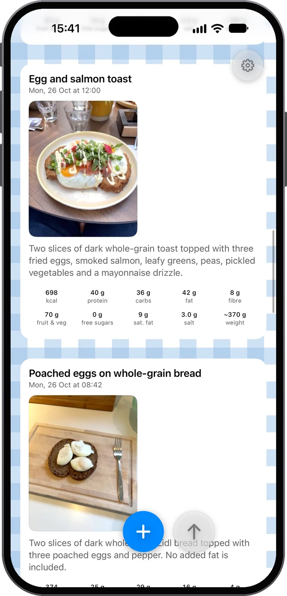
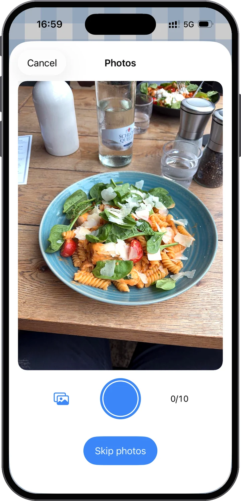
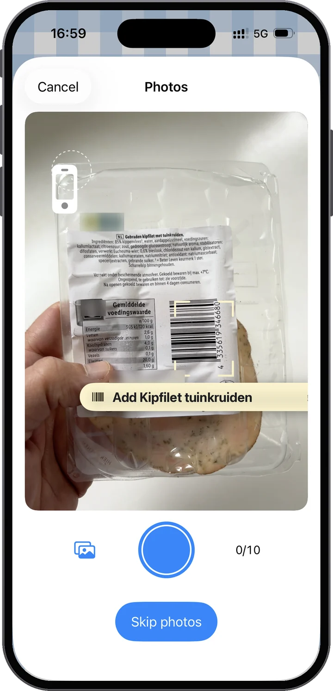
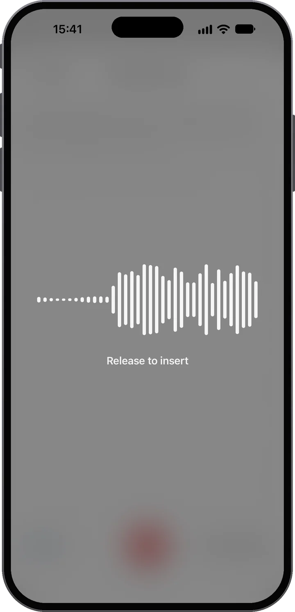
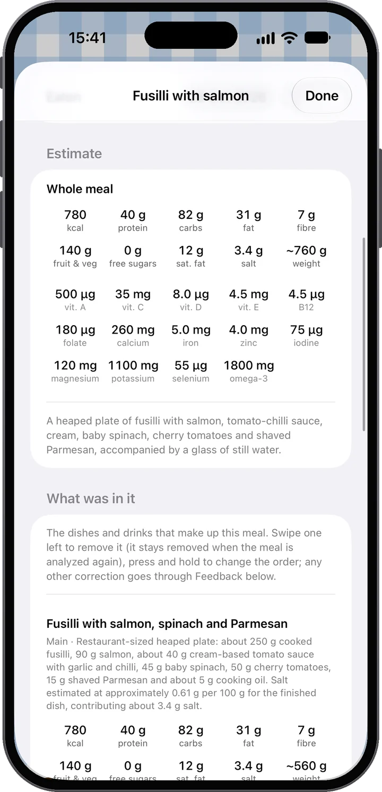
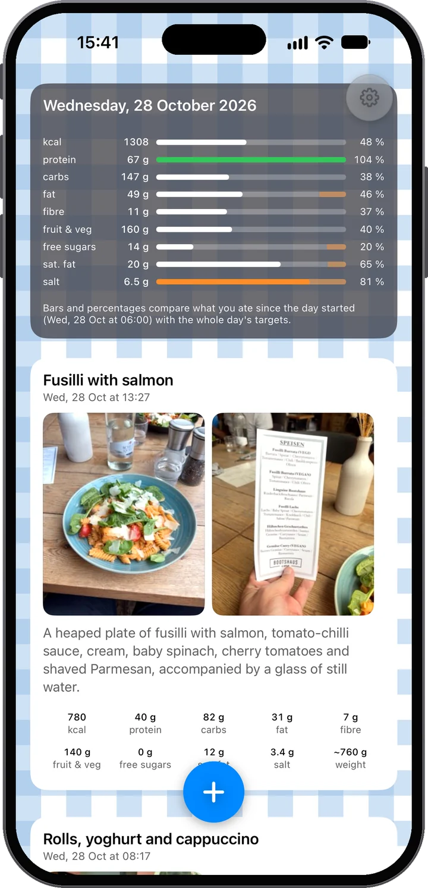
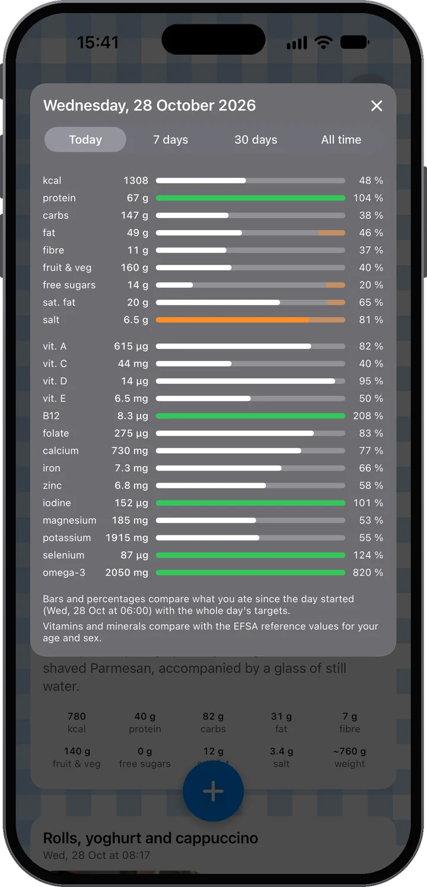

See it. Understand it.
Snap your meal and Food Moments turns it into a feed of your day: photos first, what’s actually in it right underneath. Say what the photo can’t show — and see where your day stands before the next meal.

Almost no effort in — a lot of understanding out.
Photograph your food — one shot or several. Then add context: type a note, or just hold the mic and talk. “Two fried eggs and the small roll” is all it takes.
The meal is analyzed for you: energy, protein, carbs, fat, fibre, fruit and vegetables, free sugars and salt, dish by dish, and it says plainly how sure it is — and see how it fits into your day.
Through the day, your feed fills up and the day bars fill in. You see how your food day is developing and where you stand — before you choose the next meal, not after.
Been good all day? Your bars will show it. So have the dessert — and feel good about it: you're still on target, and it's your own data saying so, not a guess.

Photos first
The photo is the primary source. The analysis reads the dishes, the portions — even a nutrition label or a barcode when one is in the shot. And it doesn't have to be one photo: a meal can hold up to ten. Cooking tonight? Snap the ingredients as you go, then the finished plate — the analysis puts it all together.

Or scan the barcode
Point the camera at a barcode and Food Moments finds the product with its nutrition label — no photo needed. Scan a few products and they become one meal; add a photo of what you cooked and the analysis uses the label’s exact figures. Product data from Open Food Facts.

Then add your words — your way
Often the photos are already enough. When they're not — what went into the smoothie, how much of the pan you actually ate — add context in your own words. If you like typing, type. But do try the mic: dictation here runs on the latest speech models, drops your words into the note a moment after you let go, and holds up even on a noisy street. Either way, your words always win over the photo — the app listens to you.
Chicken salad, a buttered slice of sourdough and half a glass of orange juice.
The dishes and drinks that make up the meal. Swipe one away, hold to reorder — every other correction goes through Feedback.
The food was clear; how much of it there was had to be judged from the photos. Take the numbers as close rather than exact — saying the amount makes them sharper.
Nutrition beyond calories
Every Food Moment is broken down the way a menu would list it — each dish and drink with its own portion and numbers, summed into totals: energy, protein, carbs, fat, fibre, fruit and vegetables, free sugars, salt and an estimated weight. And the app tells you honestly how confident it is, so you know when a quick spoken note would sharpen the estimate.

Your personal feed
Your meals, drinks and snacks appear over the course of the day — photos first, like a personal feed viewed through nutrition. At the top, the day card keeps the running score: every bar compares what you've eaten so far with the whole day's targets, so a low bar in the morning isn't a failure — it's headroom. Every target names its public source: where each one comes from.
One tap deeper
Tap the day card for fourteen vitamins and minerals, compared with the European reference values for your age and sex. Switch to 7 days, 30 days or all time to see how your weeks add up. Which fourteen, and why.


Have the dessert. Enjoy the pizza. The point is to know what it means in the context of the rest of your day — and then make the next decision with better information.
What we stand for
Good food gives energy, supports health and makes everyday life feel better. At the same time, nobody eats perfectly all the time — and Food Moments normalizes that. This is an app for people who care about themselves, not one that punishes people for eating.
Private by design
An account that's just your email — no name, no password. Your meals stored in the EU, yours to download or delete any time.
Your account is only your email address. No password, no name — a one-time code signs you in, and your meals, photos and history live in your account on servers in the European Union, so a new iPhone brings everything back. Photos and notes are sent to the AI for the nutritional analysis you ask for — with your consent, and never to build a profile; we look at your meals ourselves only if you switch on Help improve Food Moments. Dictation stays in the EU as well: it has its own consent, asked once, and its speech service runs in the EU like the analysis — nothing the app sends leaves the European Union. Download everything or delete your account any time, right in Settings. The details are in the privacy policy, in plain language.

The first 14 days are free. Cancel in your Apple account before they end and you pay nothing.